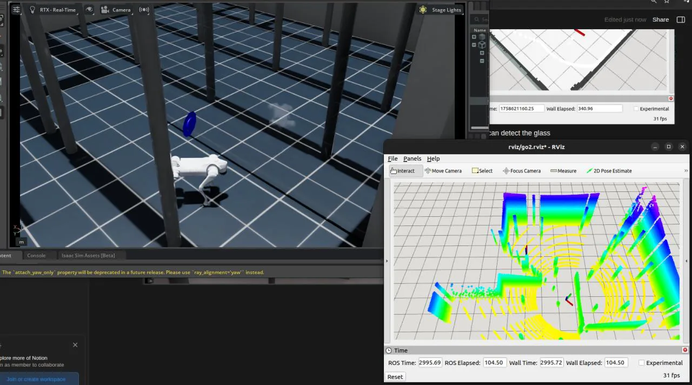
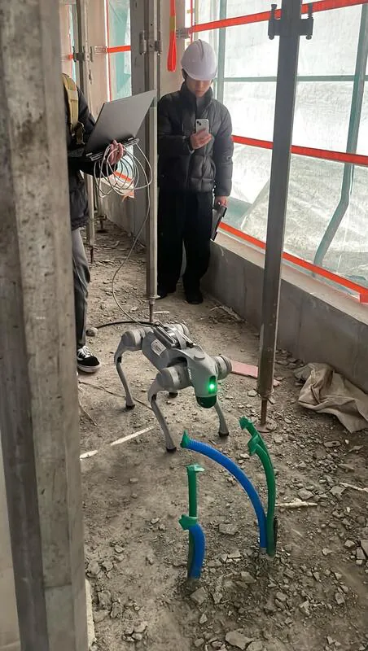

KICEM 2025 · Published
Simulation Framework for Construction-Site Quadruped Navigation
Isaac Sim + ROS 2 + Nav2 pipeline for repeatable quadruped navigation tests. Tuned parameters reached 100% success over 30 trials per configuration.
- Venue
- KICEM 2025
- Status
- Published
- Role
- First author
- When
- 2025
- Where
- Robotics & AI Lab, Kwangwoon University
Abstract
Quadruped robots offer promising mobility for construction-site applications, where uneven terrain, dense obstacles, and narrow passages require reliable and safe navigation. However, existing simulation studies often rely on heterogeneous platforms and ad-hoc evaluation procedures, limiting reproducibility and systematic navigation parameter analysis.
This study presents an integrated simulation framework for construction-site quadruped navigation by combining NVIDIA Isaac Sim with ROS 2, SLAM Toolbox, Adaptive Monte Carlo Localization (AMCL), and Nav2. The framework provides high-fidelity physics and sensor simulation together with deterministic execution and a modular navigation pipeline for repeatable evaluation.
To demonstrate its parameter-evaluation capability, three key navigation parameters (obstacle inflation radius, controller frequency, and local costmap update rate) were systematically evaluated through 30 navigation trials per configuration in construction environments containing dense poles and narrow passages. An inflation radius of 0.6 m, controller frequency of 20 Hz, and costmap update rate of 10 Hz achieved 100% navigation success while maintaining comparatively low navigation time, whereas suboptimal configurations reduced success rates to 90–93% or increased completion time. These results demonstrate the framework's ability to support reproducible parameter optimization and systematic validation of quadruped navigation algorithms for construction-site environments.

